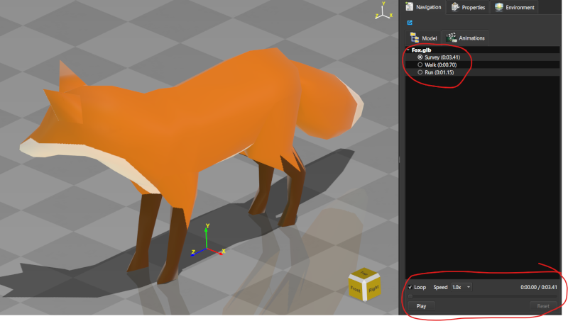
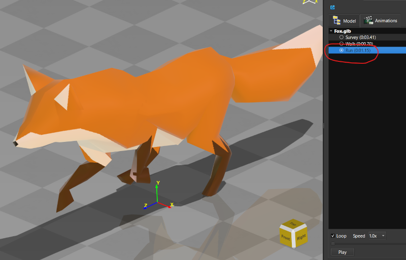
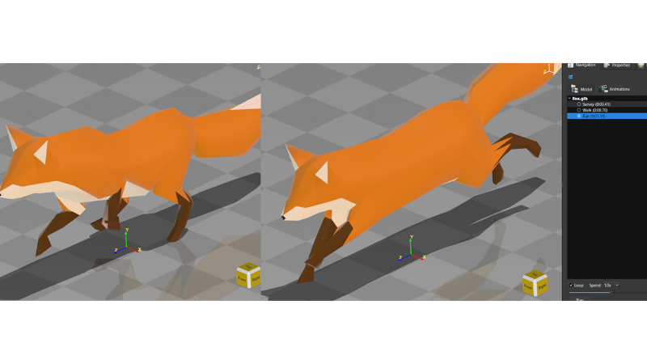

Lesson 16 of 18
Lesson 16: Morph Target Animation
Introduction
Morph targets (also called blend shapes) let a mesh smoothly deform between different vertex-position variants — commonly used for facial expressions, breathing cycles, and other organic deformation that can't be achieved with rigid transforms or skeletal rigging alone. ModelViewer supports morph targets imported from glTF/GLB files and preserves them when you save and reload a session.
Morph targets are distinct from the object transforms covered in Lesson 8 — they deform the mesh's actual vertex positions rather than moving, rotating, or scaling a rigid object.
Loading a Model with Morph Targets
Step 1: Import a glTF/GLB Model
Import a glTF or GLB file that contains morph target (blend shape) data. Not all models include them — check the model's source if you're unsure.
Step 2: Check for an Animation Clip
If the file also includes an animation clip that drives the morph weights over time, it will appear in the Animations panel automatically.

A model with morph targets loaded, ready for playback in the Animations panelPlaying Back Morph Animations
Morph target weights are driven the same way as any other animation clip:
Step 1: Open the Animations Panel
Open the Animations panel from the right-side panels.
Step 2: Select a Clip
Choose the animation clip that drives the morph deformation from the clip list.
Step 3: Play, Pause, Loop
Use the 'Play'/'Pause' button to control playback, and enable 'Loop' to repeat the animation continuously.
Step 4: Adjust Speed
Use the 'Speed' control to slow playback down for a closer look at the deformation, or speed it up for a quick preview.

Animations panel with a morph-driving clip selected and playback controls visible
The same mesh at two different points in a morph target animationSaving and Reloading
Step 1: Save as MVF
Save your session as an .mvf file — morph target data and their driving clips are fully preserved.
Step 2: Export to glTF/GLB
Exporting back to glTF or GLB re-injects the morph target and animation data so the file remains compatible with other glTF viewers and tools.
If a model's morph deformation doesn't seem to move, first make sure you've selected and played the correct clip — a model can have multiple clips, and not all of them necessarily drive morph weights.